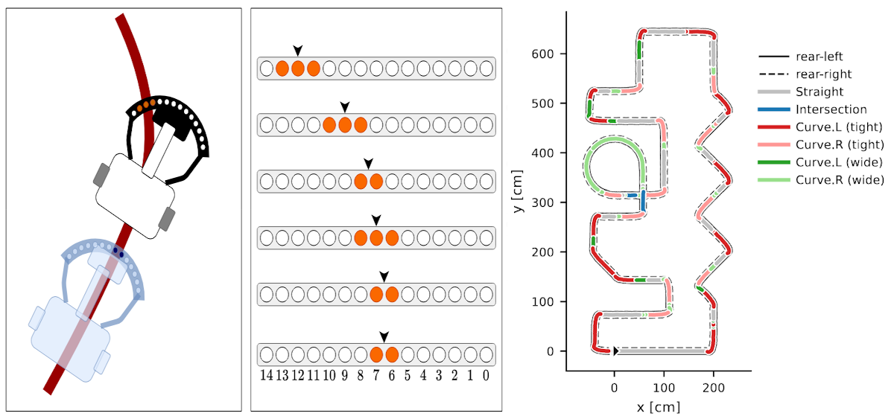
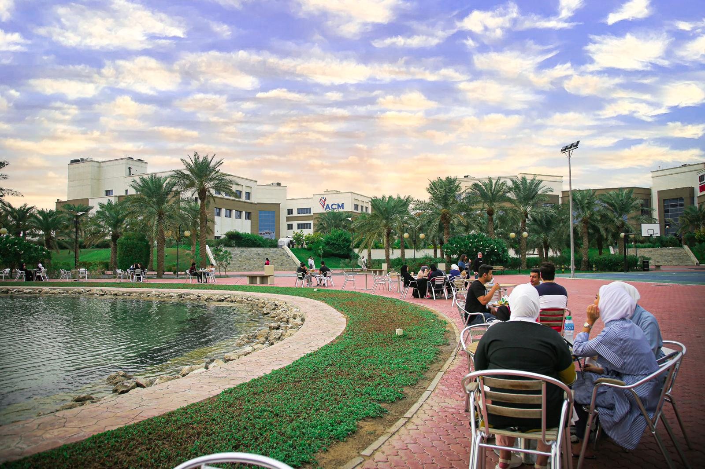

2026
Paper Submitted to ICPRAM 2026
Submitted "AI-assisted Fast Segment Detection and PID Gain Scheduling for Competitive Line-Following Robots" to the 15th International Conference on Pattern Recognition.

2025
1st Place at Robotex Kuwait
Mentored the ACM student team to win 1st place in the Line-Following category at the Kuwait National Robotex Competition.

Feb. 2025
Appointed CET Program Coordinator
Appointed as Program Coordinator for the Computer Engineering Technology department at the American College of the Middle East.